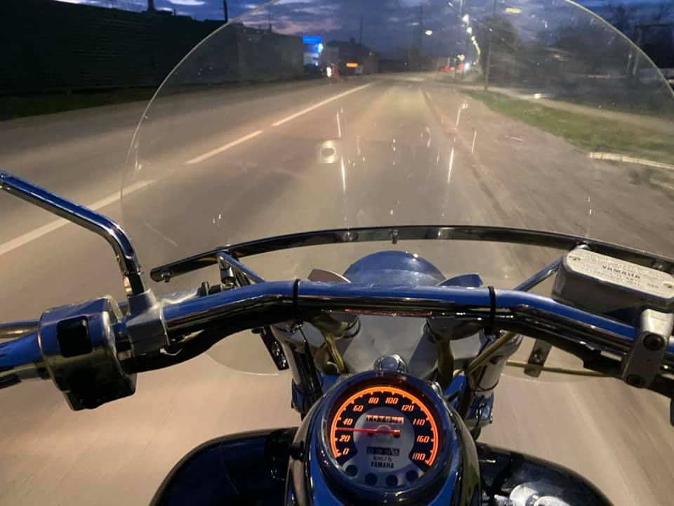

Автомобиль выбирают те, кто ищет утилитарности, полезности. На автомобиле комфортно. Комфортно сидеть в сторону работы утром, а вечером сидеть в сторону дома, лениво листая социальные сети. Комфортно ехать в Новосибирск за покупками. Комфортно забирать детей из сада. Однажды выбрав автомобиль, люди снимают множество выборов в будущем. Будет комфортно.
Другое дело — мотоцикл. На нём уже не поедешь в «Мегу», поглаживая кошелёк. Не посидишь в Инстаграме, тошня 40 км/ч по дороге домой. Не поедешь в футболке, когда на улице дождь, да и вообще в футболке ездить нежелательно.
Кажется, выбора даже меньше, но всё решается в пробках.
Пробка на машине это отсутствие вариантов. Это просто сидишь в железном ящике с обручем в руках, пока другие принимают решения (досматривать это смешное видео, или поискать посмешнее).
На мотоцикле не бывает пробок. Ты всегда сам решаешь: стоять или ехать. И пробка это не всегда буквальная пробка на дороге, это вполне себе метафора.
Всегда решать самому — это ли не привилегия для человека во все времена?
Даже, если для этого нужно пожертвовать комфортом.